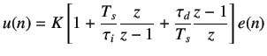
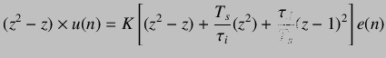

By mapping equation 9.16 to discrete time interval by using the Trapezoidal Approximation for integral mode and
Backward Difference Approximation for derivative mode, we get

(9.17)
On cross multiplication, we obtain

(9.18)
We divide by z, and using the shifting theorem, we obtain
![$\displaystyle =K\left[-1-2\frac{\tau_d}{T_s}\right]$](img200.png)
![$\displaystyle =K\left[\frac{\tau_d}{T_s}\right]$](img202.png)